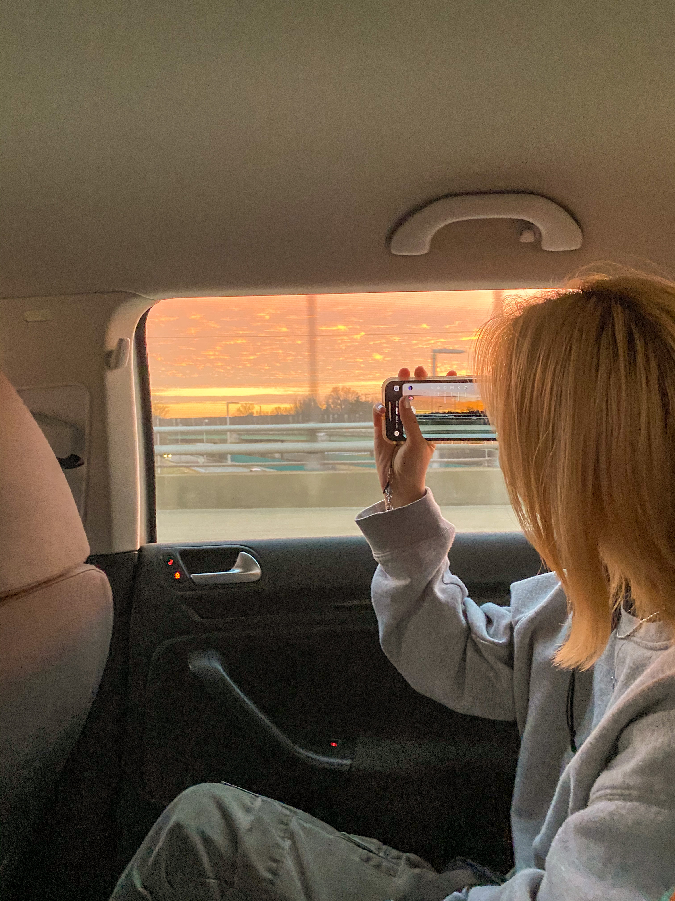
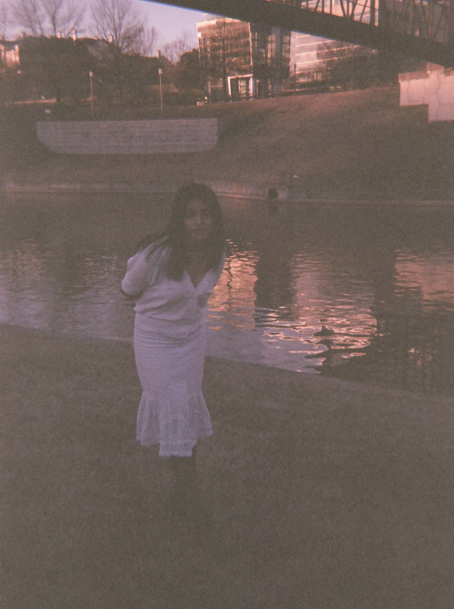
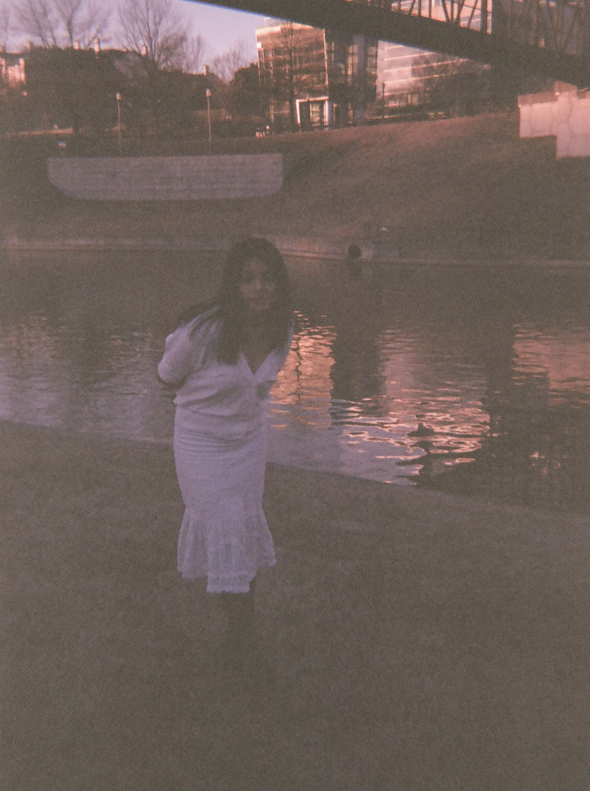
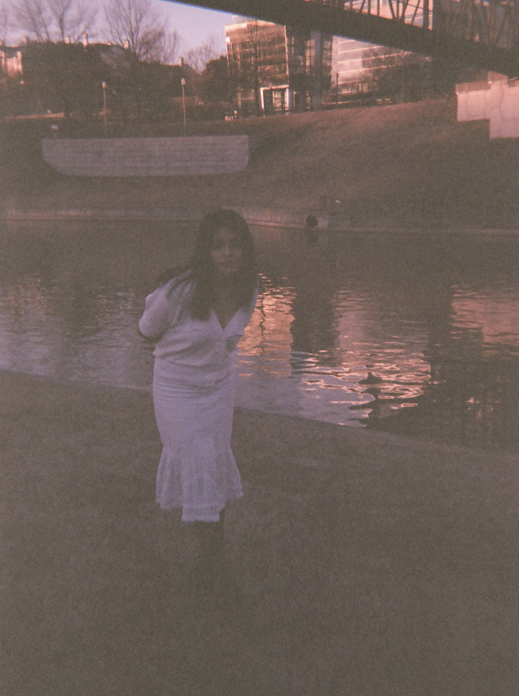

100 by Dean Blunt
Look at my shoulder


 

I'm bound to meet you
Everybody says I'm wrong
Said, I'm dying to meet you, girl Though everybody says I'm wrong Everybody says I'm wrong But we keep it going on I feel it's coming on But the bullshit got too long, yeahCasio by Jungle
Casio
Playing on my heart just like a Casio
Breaking it apart so you can let it go
Wait another year that's not original,or cynical
Alright, let's go now
When all your dreams are gone
And you're still holding on
You waited far too long Don't say
I know, you know it's over
Eyes Without A Face by Billy Joel
I spend so much time
Believing all the lies
To keep the dream alive
Now it makes me sad
It makes me mad at truth
For loving what was you
Eyes without a face
(Les yeux sans visage)
Eyes without a face
(Les yeux sans visage)
Eyes without a face
Got no human grace
Your eyes without a face
Europe by Scott Gilmore
